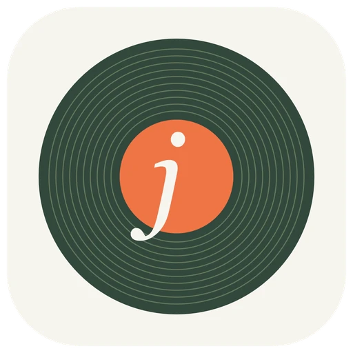

Bring your whole library
Add several local or NAS folders. Rescans only look at files that changed. MP3, FLAC, M4A, Ogg, Opus, WAV, AIFF, ALAC, APE and more.

jipassYour music / your listening room
Know your collection by heart.
A few seconds. Four answers. Your entire music library. jipass turns the music you already own into a trivia game.
Windows, Linux or Intel? Use the browser edition
Latest release: jipass 2.0.0
jipass plays music from your computer. Open this page on your Mac or PC to get it.
A sample question. In the game the four answers come from your own library. Try it: click one, or press 1–4.
Side A · What's in the sleeve
Point jipass at your music folders or a mounted NAS, pick a category, and press play.
Add several local or NAS folders. Rescans only look at files that changed. MP3, FLAC, M4A, Ogg, Opus, WAV, AIFF, ALAC, APE and more.
Play a genre, search for an artist, or shuffle everything. Genre rounds mix "who's the artist?" and "what's the song?"
Wrong answers come from your own library, from the same artist or genre where possible, so you can't guess by elimination.
Clips start at a random point and play on their own. The clock only starts once the audio is actually playing.
After each guess: right or wrong, your speed bonus, your streak, and the album artwork from your files.
Player profiles, history, accuracy, response times and personal bests, all saved on your computer.
Side B · Get it
Both need FFmpeg to play clips. Both keep your music, scores and settings on your own computer.
brew install ffmpegApple silicon, macOS 13 or later. Coming from the browser edition? Your library, players and scores import on first launch.
Download jipass for Mac .zip · 0.8 MBgit clone https://github.com/dustalexw/jipass.git
cd jipass
python3 app.py # Windows: py -3 app.py
No accounts, no packages to install, nothing to build.
Get the source on GitHub dustalexw/jipassScoring
500 + round(500 × (1 − time ÷ clip length))
Your music, folder paths, NAS sign-ins, scores and game history never leave your computer. There's no account and no tracking.
The one exception is artist photos: jipass looks up artist names on Wikipedia, then keeps the photos and their credits on your computer. Album covers come only from your own files.
Liner notes
Released October 25, 2026